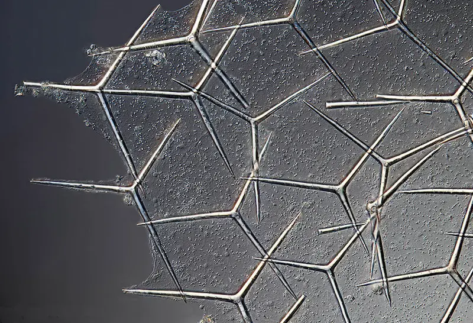
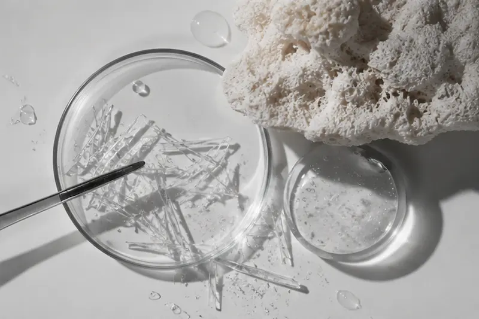
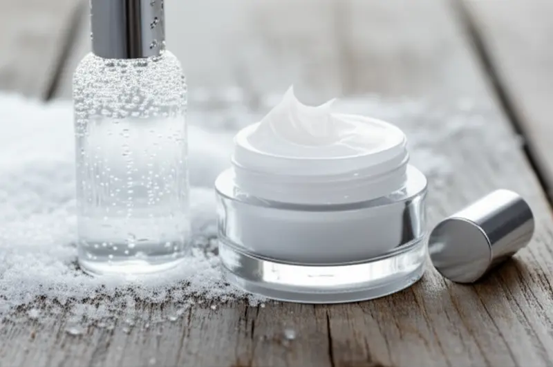
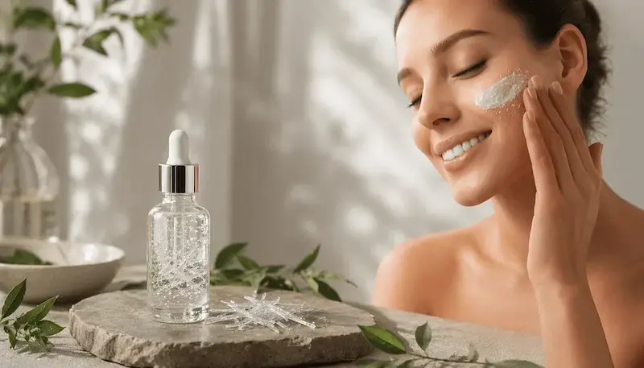

Microspiculele în cosmetice: ghid științific despre efecte și utilizarea în îngrijirea pielii
Microspiculele (Spicules) sunt structuri microscopice, asemănătoare unor ace fine, utilizate în anumite formule cosmetice. În funcție de tehnologia de producție și de compoziția produsului, acestea pot avea origini și caracteristici diferite. În cosmetice, microspiculele atrag atenția prin modul în care interacționează cu suprafața pielii și prin senzația de furnicături ușoare care poate apărea după aplicarea produsului.
Interesul pentru acest ingredient este legat de cercetarea rolului său în formulele cosmetice, inclusiv de posibilitatea de a influența temporar starea stratului cornos și distribuirea altor ingrediente la suprafața pielii. Unii producători promovează produsele cu microspicule ca soluții pentru îmbunătățirea texturii și a aspectului pielii. Totuși, efectul depinde de originea și caracteristicile microspiculelor, de formula completă, de modul de utilizare și de reacția individuală a pielii.
Atunci când alegi produse cosmetice cu microspicule, este important să iei în considerare nu doar afirmațiile publicitare, ci și lista completă de ingrediente INCI, originea și particularitățile structurilor utilizate, recomandările producătorului și eventualele restricții. Senzația de furnicături după aplicare nu reprezintă o dovadă a eficienței produsului. De asemenea, iritația intensă, roșeața persistentă sau senzația de arsură nu trebuie considerate efecte obligatorii ale utilizării acestuia.
În acest ghid, Estetica Lens explică ce sunt microspiculele, ce tipuri sunt utilizate în cosmetice, cum interacționează cu pielea, ce senzații pot provoca și cine ar trebui să acorde o atenție deosebită folosirii produselor care le conțin. Vom analiza, de asemenea, cum să alegi astfel de produse, cum să le introduci corect în rutina de îngrijire și cum să le asociezi cu alte produse cosmetice.
Descoperă serviciileGhid complet despre microspiculele din cosmetice
Ce sunt microspiculele?
Ce reprezintă aceste structuri microscopice, asemănătoare unor ace fine, de unde provin și de ce sunt utilizate în cosmetice.
Cum acționează microspiculele?
Cum interacționează cu suprafața pielii, de ce pot provoca furnicături și de ce depinde efectul lor.
Ce efecte pot avea microspiculele asupra pielii?
Ce se știe despre posibila lor influență asupra texturii pielii, stratului cornos și distribuirii ingredientelor cosmetice.
Proprietăți și posibile beneficii pentru piele
Ce efecte declară producătorii și ce particularități ale microspiculelor sunt analizate în studiile cosmetice.
Cum identifici microspiculele în lista de ingrediente?
Ce denumiri pot apărea în lista INCI și de ce este important să ții cont de originea și caracteristicile componentelor.
În ce produse cosmetice sunt utilizate?
Seruri, creme, esențe și alte produse cosmetice cu microspicule: prin ce se pot deosebi.
Cum alegi un produs cu microspicule?
La ce să fii atent în lista de ingrediente, în descrierea produsului și în recomandările producătorului pentru a face o alegere informată.
Cu ce poți combina microspiculele?
Cum să incluzi un astfel de produs în rutina de îngrijire și ce trebuie să ai în vedere atunci când îl asociezi cu acizi, retinoizi și alte ingrediente active.
Limitări și măsuri de precauție
De ce furnicăturile nu dovedesc eficiența produsului, cum să ții cont de sensibilitatea pielii și când este mai bine să întrerupi utilizarea.
Întrebări frecvente
Cui i se pot potrivi produsele cu microspicule, cât de des pot fi utilizate și cât de convingătoare sunt dovezile din cercetări.
Ce sunt microspiculele?
Microspiculele (Spicules) sunt particule foarte mici, cu o structură asemănătoare unor ace fine, care sunt adăugate în anumite produse cosmetice. Le poți imagina ca pe niște „ace” microscopice, invizibile cu ochiul liber, care intră în contact cu suprafața pielii în timpul aplicării produsului.
În cosmetice, microspiculele sunt adesea obținute din bureți marini. După o prelucrare specială, din aceștia sunt separate structuri solide foarte mici, care sunt apoi adăugate în creme, seruri și alte produse. Totuși, originea și caracteristicile microspiculelor pot varia în funcție de tehnologia utilizată de producător.
La aplicarea unui produs cu microspicule, uneori poate apărea o senzație ușoară de furnicături sau înțepături. Aceasta este asociată cu interacțiunea particulelor cu suprafața pielii. Senzațiile diferă însă de la o persoană la alta: unele persoane abia le percep, în timp ce altele pot resimți un disconfort mai pronunțat.
Microspiculele sunt utilizate în formule destinate îngrijirii texturii și aspectului pielii. Producătorii le studiază și ca modalitate de a influența distribuirea altor ingrediente la nivelul pielii. Este important de reținut însă că microspiculele nu acționează la fel în toate produsele, iar efectul lor depinde de dimensiunea și proprietățile particulelor, de compoziția produsului și de reacția individuală a pielii.
Un alt aspect important: microspiculele nu sunt același lucru cu particulele exfoliante mai mari din scruburile obișnuite. Rolul lor și modul în care interacționează cu pielea sunt diferite. De aceea, atunci când alegi un astfel de produs, este important să citești instrucțiunile și să respecți recomandările producătorului.
Cum acționează microspiculele?
Imaginează-ți niște ace minuscule incluse în compoziția unei creme sau a unui ser. Atunci când întinzi produsul pe piele, aceste particule intră în contact cu suprafața acesteia și pot acționa ușor asupra stratului cel mai superficial — stratul cornos.
În anumite formule, microspiculele pot forma canale microscopice la nivelul stratului cornos. Astfel, ele pot influența modul în care alte ingrediente interacționează cu pielea și se distribuie în straturile sale superficiale. Acest lucru nu înseamnă însă că toate ingredientele active pătrund neapărat mai profund sau devin mai eficiente. Rezultatul depinde în mare măsură de formula produsului și de proprietățile particulelor.
După aplicare, poate apărea uneori o senzație ușoară de furnicături sau înțepături. Aceasta poate fi asociată cu contactul microspiculelor cu pielea. Totuși, lipsa furnicăturilor nu înseamnă că produsul nu acționează, iar senzația intensă de arsură sau iritația pronunțată nu reprezintă un semn al unui rezultat mai bun.
Pe scurt, microspiculele permit produsului să interacționeze într-un mod aparte cu suprafața pielii. Efectul final depinde însă de compoziția produsului, de caracteristicile microspiculelor, de modul de utilizare și de reacția individuală a pielii.

Cum influențează microspiculele pielea?
Microspiculele acționează în principal asupra stratului superficial al pielii — stratul cornos. Acesta este stratul protector exterior, care contribuie la menținerea hidratării și protejează pielea împotriva factorilor iritanți din mediul înconjurător. La aplicarea unui produs cosmetic, microspiculele intră în contact cu suprafața pielii și pot forma canale microscopice sau pot modifica temporar structura stratului cornos. Intensitatea acestui efect depinde de caracteristicile particulelor și de formula produsului.
1. Pot influența pătrunderea altor ingrediente. Unele microspicule sunt utilizate în formule pentru a modifica modul în care ingredientele active interacționează cu stratul superficial al pielii. Se presupune că aceste canale microscopice pot facilita distribuirea anumitor substanțe. Acest lucru nu înseamnă însă că toate ingredientele pătrund automat mai profund sau devin mai eficiente: rezultatul depinde de proprietățile lor și de compoziția produsului.
2. Pot modifica temporar textura pielii. După utilizarea anumitor produse, pielea poate părea mai netedă și mai uniformă. Acest efect poate fi asociat nu doar cu microspiculele, ci și cu alte ingrediente din formulă — de exemplu, substanțe hidratante și emoliente. Prin urmare, nu este corect să atribuim întregul efect vizibil unui singur ingredient.
3. Pot provoca furnicături. Senzația ușoară de înțepături sau de ace fine este una dintre particularitățile menționate frecvent de producătorii și utilizatorii acestor produse. Această senzație este asociată cu contactul particulelor cu pielea, dar nu dovedește, în sine, că produsul acționează mai eficient. Dacă apar senzație intensă de arsură, roșeață pronunțată sau disconfort persistent, produsul trebuie îndepărtat prin clătire, iar utilizarea trebuie întreruptă.
4. Necesită atenție la starea barierei cutanate. Deoarece microspiculele pot acționa asupra stratului protector exterior, utilizarea lor necesită prudență în cazul pielii sensibile, iritate sau deteriorate. Nu aplica astfel de produse pe zone cu răni, inflamații sau iritații pronunțate.
Ce înseamnă acest lucru în practică? Microspiculele pot modifica modul în care un produs cosmetic interacționează cu suprafața pielii și pot influența distribuirea anumitor ingrediente. Totuși, efectul nu este același pentru toate produsele și nu garantează îmbunătățirea stării pielii. Atunci când alegi un astfel de produs, ține cont de compoziție, de recomandările producătorului și de reacția propriei pieli. Este indicat să începi utilizarea cu prudență.
Proprietățile și posibilele beneficii ale microspiculelor pentru piele
Microspiculele prezintă interes în cosmetologie nu ca ingrediente obișnuite de îngrijire, ci mai ales datorită acțiunii lor fizice asupra suprafeței pielii. Acestea sunt incluse în formule pentru a modifica interacțiunea produsului cu stratul cornos și, eventual, pentru a influența distribuirea altor ingrediente. Prin urmare, beneficiile potențiale depind nu doar de microspicule, ci și de formula completă.
1. Posibila îmbunătățire a texturii pielii. Produsele cu microspicule sunt adesea destinate îngrijirii pielii cu textură neuniformă. După utilizare, pielea poate părea mai netedă și mai uniformă. Totuși, acest rezultat poate fi asociat și cu ingredientele hidratante, emoliente și alte componente ale produsului. Nu trebuie presupus că microspiculele elimină de la sine și în mod garantat imperfecțiunile de textură.
2. Posibila influență asupra distribuirii ingredientelor active. Microspiculele sunt studiate ca modalitate de a modifica permeabilitatea stratului superficial al pielii și de a facilita interacțiunea anumitor substanțe cu acesta. Acest aspect prezintă interes mai ales în formulele care conțin și alte ingrediente de îngrijire. Efectul depinde însă de dimensiunea și proprietățile particulelor, de compoziția produsului și de substanța utilizată.
3. Susținerea îngrijirii pielii cu aspect tern. Unii producători promovează produsele cu microspicule pentru îmbunătățirea aspectului general al pielii. Totuși, un aspect mai proaspăt și mai neted poate fi rezultatul acțiunii combinate a ingredientelor din formulă, nu neapărat un efect demonstrat al microspiculelor în sine.
4. Un mod aparte de interacțiune cu suprafața pielii. Spre deosebire de cremele și serurile obișnuite, produsele cu microspicule conțin particule solide foarte mici, care intră în contact fizic cu stratul cornos. Această particularitate le diferențiază de multe alte ingrediente cosmetice. Totuși, o senzație mai intensă în timpul aplicării nu înseamnă automat un rezultat mai vizibil.
Ce este important de reținut? Microspiculele nu reprezintă o soluție universală împotriva ridurilor, petelor pigmentare sau acneei. Beneficiile lor potențiale depind de tehnologia utilizată, de formulă și de particularitățile pielii. De aceea, atunci când alegi un produs, este mai bine să te orientezi după lista completă de ingrediente, instrucțiunile de utilizare și afirmațiile realiste ale producătorului, nu doar după promisiunile unui rezultat spectaculos.

Cum identifici microspiculele în lista de ingrediente?
Dacă vrei să cumperi un produs cosmetic cu microspicule, începe prin a verifica lista de ingrediente INCI. Există însă o particularitate: termenul Spicules nu este întotdeauna menționat separat în lista de ingrediente. Denumirea depinde de originea particulelor și de modul în care producătorul declară materia primă utilizată.
1. Caută denumirea Hydrolyzed Sponge. În unele produse cosmetice, microspiculele sunt obținute din bureți marini. În astfel de formule, în lista INCI poate apărea denumirea Hydrolyzed Sponge. Aceasta indică o materie primă asociată cu structuri de burete prelucrate. Totuși, prezența acestui ingredient nu oferă, de una singură, informații exacte despre dimensiunea particulelor, cantitatea lor sau proprietățile produsului finit.
2. Acordă atenție denumirilor Spicules și Reedle. Acești termeni apar frecvent în descrierile și materialele publicitare ale produselor cosmetice. De exemplu, Reedle poate fi folosit ca denumire pentru o tehnologie sau ca termen comercial pentru microspiculele dintr-o anumită gamă. Totuși, acestea nu sunt denumiri INCI universale, așa că nu este suficient să le cauți doar în lista oficială de ingrediente.
3. Verifică descrierea produsului și informațiile producătorului. Dacă lista INCI conține Hydrolyzed Sponge, verifică dacă producătorul confirmă prezența microspiculelor și explică originea acestora. Este util să afli și cât de des se recomandă utilizarea produsului, dacă este potrivit pentru pielea sensibilă și cu ce alte produse nu este recomandat să fie asociat.
4. Nu confunda prezența microspiculelor cu eficiența produsului. Chiar dacă ingredientul căutat apare în listă, acest lucru nu garantează un rezultat vizibil. Contează concentrația, caracteristicile particulelor, celelalte ingrediente din formulă și modul de utilizare. Lista INCI, analizată singură, nu permite evaluarea completă a efectului produsului finit.
Ce este important de reținut? Una dintre denumirile la care merită să fii atent este Hydrolyzed Sponge. Termenii Spicules și Reedle te pot ajuta mai ales atunci când cauți informații în descrierea produsului sau pe site-ul brandului. Dacă originea microspiculelor și particularitățile utilizării lor nu sunt explicate, este mai bine să soliciți aceste informații producătorului decât să tragi concluzii doar pe baza unei mențiuni publicitare de pe ambalaj.

În ce produse cosmetice sunt utilizate microspiculele?
Microspiculele pot fi întâlnite în diferite tipuri de produse cosmetice, dar cel mai frecvent sunt incluse în formulele pentru îngrijirea feței. Acestea sunt adăugate în produse destinate îmbunătățirii aspectului și texturii pielii. Totuși, concentrația, caracteristicile particulelor și recomandările de utilizare pot varia considerabil de la un produs la altul.
1. Seruri. Acesta este unul dintre cele mai populare formate de produse cosmetice cu microspicule. Astfel de seruri conțin adesea și alte ingrediente de îngrijire: substanțe hidratante, peptide, niacinamidă și alte componente. În aceste formule, microspiculele pot fi utilizate pentru a modifica modul în care produsul interacționează cu stratul superficial al pielii.
2. Creme. În creme, microspiculele sunt asociate cu ingrediente care contribuie la hidratarea și catifelarea pielii. Acest format poate fi potrivit pentru persoanele care preferă texturi mai consistente. Totuși, prezența microspiculelor nu elimină necesitatea de a ține cont de tipul pielii și de recomandările producătorului.
3. Esențe și fiole. În aceste produse, microspiculele pot fi combinate cu diverse ingrediente active și hidratante. Producătorii le prezintă adesea ca parte a unei rutine intensive de îngrijire. Atunci când alegi un astfel de produs, este important să verifici nu doar promisiunile brandului, ci și lista completă de ingrediente și instrucțiunile de utilizare.
4. Măști și produse speciale de îngrijire. Microspiculele pot fi incluse și în măști sau în produse concepute pentru utilizare ocazională. Acestea pot avea recomandări specifice privind timpul de aplicare și frecvența utilizării, așa că este important să respecți instrucțiunile de pe ambalaj.
5. Produse care poartă denumirea Reedle. Pe ambalajele și în descrierile anumitor produse poți întâlni termenul Reedle. De obicei, acesta este o denumire comercială sau specifică unui brand, asociată cu tehnologia microspiculelor utilizată într-o anumită gamă. Nu garantează însă că produsele diferitelor branduri au aceeași compoziție sau aceeași intensitate a acțiunii.
Ce produs să alegi? Nu este recomandat să te ghidezi doar după formatul produsului sau după denumirea atractivă a unei tehnologii. Mult mai important este să înțelegi pentru ce este destinat produsul, ce alte ingrediente conține și cât de des recomandă producătorul utilizarea lui. Dacă ai pielea sensibilă sau predispusă la iritații, alege produsul cu atenție și începe utilizarea treptat, respectând instrucțiunile.

Cum alegi un produs cu microspicule?
Produsele cu microspicule pot diferi nu doar prin textură și compoziție, ci și prin dimensiunea, originea și cantitatea particulelor. De aceea, atunci când alegi un astfel de produs, este important să nu te bazezi doar pe ambalajul atractiv sau pe promisiunile unui efect imediat, ci să verifici și informațiile despre produs.
1. Stabilește de ce ai nevoie de acest produs. Unele produse sunt destinate îngrijirii pielii cu textură neuniformă, în timp ce altele pun accentul pe hidratare și îmbunătățirea aspectului general al pielii. Alege un produs cu un scop clar și promisiuni realiste. Microspiculele, prin ele însele, nu garantează eliminarea ridurilor, petelor pigmentare sau imperfecțiunilor.
2. Verifică lista completă de ingrediente INCI. Acordă atenție prezenței ingredientului Hydrolyzed Sponge și altor componente pe care producătorul le menționează ca parte a tehnologiei cu microspicule. Analizează și celelalte ingrediente: substanțele hidratante și calmante pot contribui la o formulă mai confortabilă pentru piele. Reține că lista INCI, luată separat, nu permite determinarea exactă a cantității și caracteristicilor microspiculelor.
3. Informează-te despre caracteristicile microspiculelor. Dacă brandul oferă informații despre originea, dimensiunea, cantitatea sau tehnologia de prelucrare a acestora, le poți folosi pentru a înțelege mai bine produsul. Nu presupune că produsele care poartă aceeași denumire — Spicules sau Reedle — au în mod obligatoriu aceeași acțiune.
4. Verifică instrucțiunile și frecvența utilizării. Unele produse sunt concepute pentru utilizare regulată, iar altele sunt recomandate doar ocazional. Respectă instrucțiunile producătorului și nu crește frecvența aplicării în încercarea de a obține rezultate mai rapide. Dacă produsul trebuie clătit, nu îl lăsa pe piele mai mult decât timpul indicat.
5. Ține cont de sensibilitatea pielii. Dacă pielea se înroșește ușor, reacționează la produsele noi sau este predispusă la iritații, alege cu deosebită atenție. Nu începe utilizarea dacă pielea este lezată, iritată sau inflamată. La prima aplicare, respectă recomandările producătorului și urmărește cu atenție reacția pielii.
6. Nu te ghida după intensitatea furnicăturilor. Unele branduri evidențiază senzația de „ace fine” ca pe o particularitate a produsului. Totuși, furnicăturile intense nu înseamnă că produsul este mai eficient. Dacă apare o senzație puternică de arsură, roșeață accentuată sau disconfort persistent, clătește produsul și întrerupe utilizarea.
Ce este important să reții? Un produs bun cu microspicule nu este neapărat cel mai intens sau cel mai scump. Alege un produs cu o compoziție clară, instrucțiuni detaliate și promisiuni realiste. Cel mai important este să ții cont de starea pielii tale și să nu încerci să obții rezultate prin intensificarea iritației.
Cu ce poți combina microspiculele?
Atunci când folosești produse cosmetice cu microspicule, este important să nu încarci rutina de îngrijire cu prea multe ingrediente active. Deoarece astfel de produse pot acționa asupra stratului protector superficial al pielii, este preferabil să le asociezi cu produse simple, hidratante și calmante. Recomandările concrete depind de formulă și de instrucțiunile producătorului.
1. Cu acid hialuronic. Acidul hialuronic ajută la reținerea apei și la menținerea hidratării pielii. Acesta poate fi inclus chiar în produsul cu microspicule sau poate fi utilizat separat, prin aplicarea unui produs hidratant. Această asociere poate fi utilă mai ales dacă, după utilizare, pielea se simte uscată sau tensionată.
2. Cu pantenol și Centella asiatica. Aceste ingrediente sunt utilizate frecvent în produsele destinate îngrijirii pielii sensibile sau predispuse la iritații. Ele pot contribui la o rutină de îngrijire mai confortabilă. Poți alege o cremă sau un ser cu pantenol ori Centella asiatica, dacă producătorul produsului cu microspicule nu recomandă altfel.
3. Cu ceramide. Ceramidele sunt componente importante ale barierei protectoare a pielii. Produsele care le conțin ajută la menținerea acesteia și la reducerea senzației de uscăciune. Prin urmare, o cremă cu ceramide poate completa rutina de îngrijire după utilizarea unui produs cu microspicule.
4. Cu niacinamidă. Niacinamida este utilizată în îngrijirea pielii cu nuanță neuniformă, exces de sebum sau barieră cutanată slăbită. Poate fi asociată cu microspiculele dacă ambele produse sunt bine tolerate de piele. Dacă abia începi să folosești microspicule, este mai bine să nu introduci simultan mai multe produse noi cu ingrediente active.
5. Cu un produs de protecție solară. SPF-ul este o parte importantă a îngrijirii zilnice, indiferent dacă folosești sau nu microspicule. Dacă după aplicarea produsului pielea devine mai sensibilă, este cu atât mai important să nu omiți protecția solară. Alege un produs cu spectru larg de protecție și SPF 30 sau mai mare.
Cu ce este bine să fii mai prudent? Nu este recomandat să combini fără un motiv clar, în aceeași rutină, microspiculele cu acizi AHA și BHA, retinoizi, alte produse exfoliante sau scruburi abrazive. O astfel de asociere poate accentua uscăciunea, iritația și disconfortul. Dacă folosești aceste ingrediente active, este mai prudent să le aplici în zile diferite, cu excepția cazului în care instrucțiunile producătorului prevăd o altă schemă de utilizare.
O rutină simplă. În ziua în care folosești microspicule, poți păstra rutina cât mai simplă: curățare delicată, produs cu microspicule aplicat conform instrucțiunilor și cremă hidratantă. Dimineața, adaugă un produs de protecție solară. Nu este necesar să folosești simultan multe ingrediente active — este mai important să menții confortul pielii și să protejezi bariera cutanată.
Ce este important să reții? Cel mai potrivit este să asociezi microspiculele cu produse de bază, hidratante și destinate susținerii barierei cutanate. Acizii, retinoizii și alte produse cu potențial iritant necesită prudență. Respectă instrucțiunile produsului și urmărește reacția pielii: dacă apare o senzație persistentă de arsură, roșeață accentuată sau iritație, întrerupe utilizarea.
Limitări și măsuri de precauție
Produsele cu microspicule nu sunt potrivite pentru toată lumea. Deoarece aceste particule interacționează fizic cu suprafața pielii, după aplicare pot apărea furnicături, înțepături, uscăciune sau roșeață. Intensitatea reacției depinde de particularitățile pielii, de caracteristicile microspiculelor și de compoziția produsului. De aceea, astfel de produse cosmetice trebuie utilizate cu atenție și strict conform instrucțiunilor.
1. Nu utiliza produsul pe pielea lezată sau iritată. Dacă ai răni, zgârieturi, arsuri solare, descuamare accentuată sau iritații active, amână utilizarea produsului până când pielea se reface. Evită aplicarea și pe zonele în care bariera cutanată este deteriorată.
2. Fii prudentă dacă ai pielea sensibilă. Dacă pielea reacționează frecvent la produsele cosmetice noi prin roșeață, senzație de arsură sau mâncărime, un produs cu microspicule poate fi prea intens. Înainte de utilizare, citește cu atenție lista de ingrediente și recomandările producătorului. Dacă ai îndoieli, este mai bine să ceri sfatul unui dermatolog.
3. Nu crește frecvența utilizării. Nu folosi produsul mai des decât recomandă producătorul. Aplicarea mai frecventă nu garantează rezultate mai bune, dar poate crește riscul de uscăciune și iritație. De asemenea, nu masa energic produsul în piele dacă acest lucru nu este prevăzut în instrucțiuni.
4. Asociază cu prudență alte ingrediente active. Acizii AHA și BHA, retinoizii, produsele exfoliante și scruburile pot provoca, la rândul lor, iritații. Utilizarea simultană a mai multor astfel de produse poate accentua disconfortul. Dacă ai deja ingrediente active în rutina de îngrijire, este mai bine să le folosești în zile diferite și să respecți recomandările producătorilor.
5. Nu ignora senzația intensă de arsură și roșeața persistentă. O ușoară senzație de furnicături poate apărea la utilizarea anumitor produse cu microspicule, însă durerea puternică, senzația intensă de arsură, umflarea sau iritația persistentă nu sunt reacții pe care trebuie să le urmărești în rutina de îngrijire. Dacă apare o astfel de reacție, clătește produsul și întrerupe utilizarea. Dacă simptomele sunt intense sau persistă, solicită asistență medicală.
6. Nu aplica produsul în zona ochilor sau pe mucoase, dacă instrucțiunile nu permit acest lucru. Pielea din jurul ochilor este mai subțire și mai sensibilă, așa că nu este recomandat să experimentezi cu produse destinate altor zone ale feței. De asemenea, evită contactul particulelor cu ochii.
7. Ține cont de particularitățile individuale. Dacă ai o afecțiune dermatologică, acnee în puseu activ, rozacee sau alte probleme ale pielii, nu începe să folosești un astfel de produs fără să consulți un specialist. În timpul sarcinii și alăptării, este important să verifici întreaga compoziție a produsului și, dacă este necesar, să discuți utilizarea acestuia cu medicul.
Ce este important să reții? Microspiculele nu sunt un motiv pentru a suporta iritația în numele frumuseții. Începe cu prudență, respectă instrucțiunile și nu combina dintr-o dată mai multe produse cu acțiune intensă. Dacă pielea reacționează neplăcut, întrerupe utilizarea pentru o perioadă și evaluează-i starea. Confortul pielii și menținerea barierei protectoare sunt mai importante decât promisiunile unor rezultate rapide.
Întrebări frecvente despre microspicule
Ce sunt microspiculele din produsele cosmetice?
Microspiculele sunt particule foarte mici, cu o structură asemănătoare unor ace fine, care sunt adăugate în anumite produse cosmetice. Acestea interacționează fizic cu suprafața pielii și pot influența starea stratului său superficial.
Din ce sunt obținute microspiculele?
În produsele cosmetice sunt utilizate frecvent microspicule obținute din bureți marini. În compoziția unor astfel de produse poate apărea ingredientul Hydrolyzed Sponge. Totuși, originea și caracteristicile particulelor depind de tehnologia utilizată de fiecare producător.
De ce apar furnicături după aplicarea produselor cu microspicule?
Senzația de furnicături este asociată cu contactul particulelor solide foarte mici cu suprafața pielii. La unele persoane, senzațiile sunt aproape imperceptibile, în timp ce la altele pot fi mai intense. Senzația puternică de arsură și iritația persistentă nu reprezintă dovezi ale eficienței produsului.
Ajută microspiculele ingredientele active să pătrundă mai profund?
Unele tipuri de microspicule sunt studiate ca modalitate de a modifica interacțiunea ingredientelor cosmetice cu stratul superficial al pielii. Acest lucru nu înseamnă însă că toate substanțele active pătrund neapărat mai profund sau devin mai eficiente. Rezultatul depinde de caracteristicile particulelor și de formula produsului respectiv.
Cui i se potrivesc produsele cu microspicule?
Astfel de produse pot prezenta interes pentru persoanele care doresc să încerce cosmetice cu un mod aparte de acțiune asupra suprafeței pielii. Totuși, în cazul pielii sensibile, iritate sau deteriorate este necesară prudență. Dacă ai o afecțiune dermatologică, este mai bine să discuți în prealabil despre utilizarea produsului cu un dermatolog.
Cu ce ingrediente pot fi asociate microspiculele?
În rutina de îngrijire, acestea pot fi completate cu ingrediente hidratante și emoliente, precum acidul hialuronic, pantenolul și ceramidele. Este bine să fii prudentă atunci când le asociezi cu acizi AHA și BHA, retinoizi sau alte produse exfoliante, pentru a evita accentuarea iritației. Respectă întotdeauna instrucțiunile produsului pe care îl folosești.
Cât de des pot folosi produsele cu microspicule?
Frecvența utilizării depinde de compoziția produsului și de recomandările producătorului. Unele produse sunt concepute pentru utilizare mai frecventă, iar altele pentru îngrijire ocazională. Nu mări frecvența din proprie inițiativă și urmărește reacția pielii.
Pot folosi microspiculele în fiecare zi?
Nu toate produsele cu microspicule sunt potrivite pentru utilizare zilnică. Respectă instrucțiunile producătorului și ține cont de modul în care pielea tolerează produsul. Dacă apar uscăciune, roșeață persistentă sau senzație de arsură, întrerupe utilizarea.
Cum pot identifica microspiculele în lista de ingrediente?
În unele formule poate apărea denumirea Hydrolyzed Sponge. Termenii Spicules și Reedle sunt utilizați mai ales în descrieri și în denumirile unor tehnologii, nu ca denumiri INCI universale. Pentru informații mai precise despre compoziția și originea particulelor, consultă informațiile oferite de producător.
Furnicăturile intense înseamnă că produsul este mai eficient?
Nu. Intensitatea furnicăturilor nu indică eficiența produsului. Senzația puternică de arsură, durerea, umflarea sau roșeața persistentă sunt motive să clătești produsul și să întrerupi utilizarea acestuia.
Împărtășește experiența ta
Părerea ta îi ajută pe alții să înțeleagă dacă acest ingredient li se potrivește. Chiar și 1–2 fraze sunt utile
Nu știți ce să scrieți? Selectați opțiunile — textul se va genera automat
Publicăm doar recenzii reale. Reclama și linkurile nu trec de moderare
Prin trimiterea comentariului, sunteți de acord cu Politica de confidențialitate.